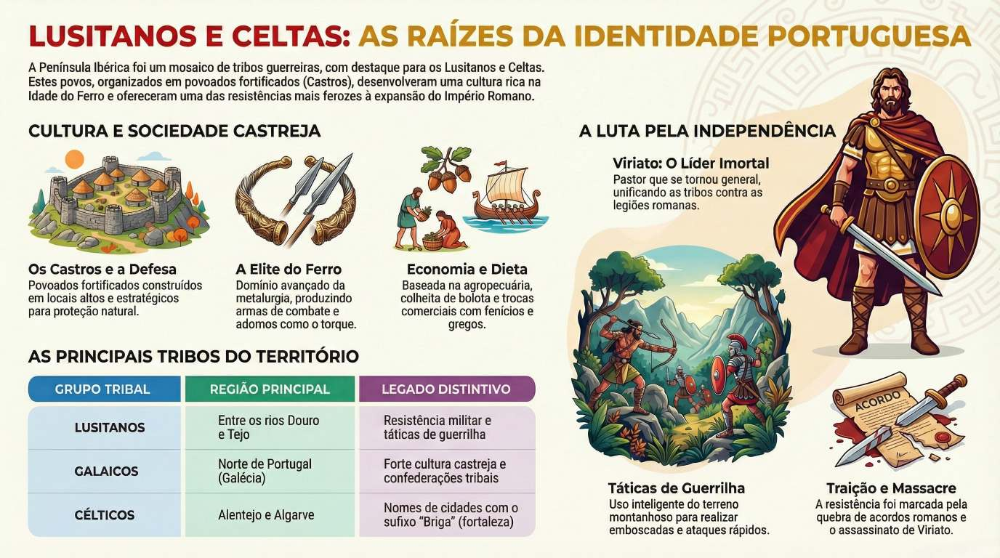

<!DOCTYPE html>
<html lang="pt-PT">
  <head>
    <meta charset="UTF-8" />
    <meta name="viewport" content="width=device-width, initial-scale=1.0" />
    <title>Os Povos Pré-Romanos</title>
    <script src="https://cdn.tailwindcss.com"></script>
    <link href="https://fonts.googleapis.com/css2?family=Inter:wght@300;400;500;600;700&family=Merriweather:ital,wght@0,300;0,400;0,700;1,400&display=swap" rel="stylesheet">
    <script src="https://unpkg.com/@babel/standalone/babel.min.js"></script>
    <script>
      tailwind.config = {
        theme: {
          extend: {
            fontFamily: {
              sans: ['Inter', 'sans-serif'],
              serif: ['Merriweather', 'serif'],
            },
            colors: {
              // Modern Terra Cotta / Bronze Palette
              bronze: {
                50: '#fff8f1',
                100: '#ffebd4',
                200: '#fcd3aa',
                300: '#f9b17a',
                400: '#f58846',
                500: '#f0631d',
                600: '#d04412',
                700: '#ad3211',
                800: '#8a2a16',
                900: '#702516',
              },
              stone: {
                850: '#1f1c1a',
              }
            },
            boxShadow: {
              'soft': '0 10px 40px -10px rgba(0,0,0,0.08)',
              'glow': '0 0 20px rgba(240, 99, 29, 0.15)',
            }
          }
        }
      }
    </script>
    <style>
      body {
        background-color: #faf9f6; /* Off-white warmer background */
        color: #1c1917;
      }
      ::-webkit-scrollbar { width: 8px; }
      ::-webkit-scrollbar-track { background: transparent; }
      ::-webkit-scrollbar-thumb { background: #d6d3d1; border-radius: 10px; }
      ::-webkit-scrollbar-thumb:hover { background: #a8a29e; }
      
      /* Glassmorphism utilities */
      .glass {
        background: rgba(255, 255, 255, 0.85);
        backdrop-filter: blur(12px);
        -webkit-backdrop-filter: blur(12px);
        border-bottom: 1px solid rgba(255, 255, 255, 0.3);
      }
      
      /* Animations */
      @keyframes float {
        0% { transform: translateY(0px); }
        50% { transform: translateY(-5px); }
        100% { transform: translateY(0px); }
      }
      .animate-float {
        animation: float 4s ease-in-out infinite;
      }
      
      @keyframes fadeIn {
        from { opacity: 0; transform: translateY(10px); }
        to { opacity: 1; transform: translateY(0); }
      }
      .animate-fadeIn {
        animation: fadeIn 0.5s ease-out forwards;
      }

      /* Flashcard 3D Logic */
      .perspective-1000 {
        perspective: 1000px;
      }
      .transform-style-3d {
        transform-style: preserve-3d;
      }
      .backface-hidden {
        backface-visibility: hidden;
        -webkit-backface-visibility: hidden;
      }
      .rotate-y-180 {
        transform: rotateY(180deg);
      }
      
      .safe-pb {
        padding-bottom: env(safe-area-inset-bottom, 20px);
      }
      
      /* Horizontal scroll hide */
      .hide-scrollbar::-webkit-scrollbar {
        display: none;
      }
      .hide-scrollbar {
        -ms-overflow-style: none;
        scrollbar-width: none;
      }
    </style>
    <script type="importmap">
    {
      "imports": {
        "react": "https://esm.sh/react@18.2.0",
        "react-dom/client": "https://esm.sh/react-dom@18.2.0/client",
        "lucide-react": "https://esm.sh/lucide-react@0.263.1"
      }
    }
    </script>
  </head>
  <body>
    <div id="root"></div>
    <script type="text/babel" data-type="module" data-presets="typescript,react">
      import React, { useState, useEffect, useMemo } from 'react';
      import ReactDOM from 'react-dom/client';
      import { BookOpen, GraduationCap, Trophy, Library, HelpCircle, LayoutDashboard, Layers, ChevronDown, ChevronUp, ChevronLeft, ChevronRight, Search, Image as ImageIcon, Play, Headphones, Lightbulb, CheckCircle, XCircle, ArrowRight, RefreshCw, Clock, AlertTriangle, RotateCw, Award, Flame, Target, Star, Undo2, SlidersHorizontal, Settings2, BarChart3, Grip, X, ZoomIn, Info, BrainCircuit, Shuffle, CheckSquare, Square } from 'lucide-react';

      // --- CONSTANTS ---
      const AppMode = {
        DASHBOARD: 'DASHBOARD',
        STUDY: 'STUDY',
        CUSTOM: 'CUSTOM', 
        TEST: 'TEST',
        RESOURCES: 'RESOURCES',
        GLOSSARY: 'GLOSSARY',
        FLASHCARDS: 'FLASHCARDS',
        QUIZCARD: 'QUIZCARD' 
      };

      const QuestionType = {
        SINGLE_CHOICE: 'SINGLE_CHOICE',
        TRUE_FALSE: 'TRUE_FALSE',
        MULTIPLE_SELECT: 'MULTIPLE_SELECT'
      };

      // --- TYPES ---
      interface Question {
        id: number;
        type: string;
        text: string;
        options: string[];
        correctAnswer: number | number[] | boolean;
        explanation: string;
        hint?: string;
        category: string; 
      }

      interface Flashcard {
        id: number;
        term: string;
        definition: string;
        category: string;
      }

      interface GlossaryTerm {
        term: string;
        definition: string;
      }

      interface ResourceSection {
        title: string;
        content: string;
        subsections?: { title: string; content: string }[];
      }

      interface UserStats {
        points: number;
        correctStudyAnswers: number;
        correctTestAnswers: number;
        testHistory: number[];
      }

      // --- DATA ---
      const GLOSSARY: GlossaryTerm[] = [
        { term: "Bandua", definition: "Divindade celta adorada na Península Ibérica, frequentemente associada à guerra e à proteção da comunidade." },
        { term: "Braakai", definition: "Peça de vestuário (calças) usada pelos homens celtas, que os distinguia da moda clássica romana (túnicas)." },
        { term: "Célia (Aelia)", definition: "Tipo de cerveja feita de cereais (trigo ou cevada) consumida pelos povos celtas." },
        { term: "Castros", definition: "Povoados fortificados típicos da Idade do Ferro, geralmente situados em colinas ou locais elevados para fins defensivos." },
        { term: "Celtiberos", definition: "Termo utilizado para designar os povos que resultaram da fusão cultural entre os migrantes celtas e as populações ibéricas nativas." },
        { term: "Damas Ibéricas", definition: "Esculturas de pedra emblemáticas (ex: Dama de Elche) que representam divindades ou figuras rituais da cultura ibérica." },
        { term: "Dux", definition: "Título militar romano (líder/general) que, excecionalmente, foi usado por fontes romanas para se referirem a Viriato." },
        { term: "Escrita Ibérica", definition: "Sistema de escrita próprio dos povos ibéricos, de origem não indo-europeia e ainda não totalmente compreendido." },
        { term: "Guerrilha", definition: "Estilo de combate baseado em ataques rápidos, emboscadas e retirada, evitando confrontos diretos em campo aberto." },
        { term: "Lusitânia", definition: "Província romana criada após a conquista, que abrangia grande parte do atual Portugal e da Extremadura espanhola." },
        { term: "Nabia", definition: "Deusa celta associada aos rios e às águas, com numerosas inscrições encontradas no ocidente peninsular." },
        { term: "Opidda", definition: "Cidades ou grandes povoados fortificados característicos da sociedade ibérica." },
        { term: "Pax Romana", definition: "Período de relativa estabilidade e ordem imposto pelo Império Romano após a pacificação das províncias rebeldes." },
        { term: "Sago", definition: "Manto retangular de lã grosseira, peça essencial do vestuário dos guerreiros da Península." },
        { term: "Torque", definition: "Colar rígido feito de metal (ouro ou bronze), usado como símbolo de elevado estatuto social, poder militar ou divindade." }
      ];

      const FLASHCARDS: Flashcard[] = [
        { id: 1, term: "Castro", definition: "Povoado fortificado em local elevado, com casas circulares e muralhas defensivas.", category: "Arquitetura" },
        { id: 2, term: "Torque", definition: "Colar rígido de metal (ouro ou bronze), usado como símbolo de estatuto e poder militar.", category: "Cultura Material" },
        { id: 3, term: "Viriato", definition: "Líder lusitano que unificou as tribos e liderou a resistência contra Roma (147-139 a.C.).", category: "Personagens" },
        { id: 4, term: "Guerrilha", definition: "Tática militar de ataques rápidos e surpresa, tirando partido do conhecimento do terreno.", category: "Militar" },
        { id: 5, term: "Nabia", definition: "Divindade indígena associada aos rios, vales e à proteção das águas.", category: "Religião" },
        { id: 6, term: "Sago", definition: "Manto de lã espessa, geralmente escuro, usado pelos guerreiros e pastores.", category: "Vestuário" },
        { id: 7, term: "Celtiberos", definition: "Povos da Meseta Central resultantes da fusão entre a cultura celta e a base ibérica.", category: "Povos" },
        { id: 8, term: "Numância", definition: "Cidade celtibérica que resistiu heroicamente ao cerco romano, tornando-se símbolo de liberdade.", category: "Lugares" },
        { id: 9, term: "Pax Romana", definition: "Período de paz e estabilidade imposto pelo Império Romano após a conquista total.", category: "História" },
        { id: 10, term: "Braakai", definition: "Calças largas amarradas no tornozelo, peça típica do vestuário celta/germânico.", category: "Vestuário" },
        { id: 11, term: "Falcatas", definition: "Espadas curvas de gume único usadas pelos guerreiros ibéricos, capazes de quebrar escudos.", category: "Militar" },
        { id: 12, term: "Citânia", definition: "Designação dada a castros de grandes dimensões e organização quase urbana (ex: Citânia de Briteiros).", category: "Arquitetura" },
        // --- NOVOS FLASHCARDS ---
        { id: 13, term: "Endovélico", definition: "Deus da saúde, da terra e do submundo, cujo santuário principal se situava no Alentejo.", category: "Mitologia" },
        { id: 14, term: "Ataegina", definition: "Deusa associada à primavera, renascimento e fertilidade, invocada também em maldições.", category: "Mitologia" },
        { id: 15, term: "Hospitium", definition: "Pacto sagrado de hospitalidade que garantia proteção mútua entre indivíduos de tribos diferentes.", category: "Organização Social" },
        { id: 16, term: "Devotio", definition: "Juramento sagrado onde um guerreiro consagrava a sua vida ao chefe, não devendo sobreviver se este morresse.", category: "Organização Social" },
        { id: 17, term: "Gentilidade", definition: "Unidade familiar alargada (clã) que constituía a base da organização social indígena.", category: "Organização Social" },
        { id: 18, term: "Fíbula", definition: "Alfinete ou broche de metal usado para prender o manto (sago) ou outras vestes.", category: "Vestuário" },
        { id: 19, term: "Caetra", definition: "Pequeno escudo redondo de madeira e couro, típico da infantaria ligeira lusitana.", category: "Militar" },
        { id: 20, term: "Urna Cinérea", definition: "Vaso de cerâmica usado para depositar as cinzas dos mortos após a cremação.", category: "Religião" },
        { id: 21, term: "Verraco", definition: "Escultura de pedra em forma de porco ou touro, típica dos Vetões, usada para proteção do gado.", category: "Arte" },
        { id: 22, term: "Trebaruna", definition: "Divindade protetora da casa, da propriedade e da comunidade.", category: "Mitologia" }
      ];

      const QUESTIONS: Question[] = [
        {
          id: 1,
          type: QuestionType.SINGLE_CHOICE,
          category: "Lusitanos",
          text: "Qual era a localização geográfica predominante dos povos lusitanos na Península Ibérica?",
          options: [
            "Exclusivamente a norte do rio Minho, na Galécia.",
            "Entre os rios Douro e Tejo.",
            "Ao sul do rio Guadiana, na atual região do Algarve.",
            "Na zona costeira do Mediterrâneo, perto de Cartago Nova."
          ],
          correctAnswer: 1,
          explanation: "Os lusitanos ocupavam o centro da Península, protegidos pela orografia entre o Douro e o Tejo.",
          hint: "Pense nos dois grandes rios que atravessam o centro de Portugal."
        },
        {
            id: 2,
            type: QuestionType.SINGLE_CHOICE,
            category: "Lusitanos",
            text: "Sobre a origem étnica dos lusitanos, qual a conclusão mais aceite pelos historiadores modernos?",
            options: [
            "Eram um povo de origem indo-europeia pré-celta que incorporou elementos celtas.",
            "Eram um grupo isolado sem qualquer relação com as línguas indo-europeias.",
            "Eram celtas puros vindos diretamente da Europa Central.",
            "Eram descendentes diretos de colonos fenícios e gregos."
            ],
            correctAnswer: 0,
            explanation: "As evidências apontam para uma origem indo-europeia pré-celta, com uma cultura guerreira única.",
            hint: "Considere a mistura de elementos locais antigos com influências migratórias posteriores."
        },
        {
            id: 3,
            type: QuestionType.SINGLE_CHOICE,
            category: "Lusitanos",
            text: "O que caracterizou o massacre perpetrado pelo pretor Sérvio Sulpício Galba em 150 a.C.?",
            options: [
            "Uma batalha campal onde a cavalaria romana derrotou os lusitanos.",
            "O cerco prolongado e a fome da cidade de Numância.",
            "A execução pública de Viriato perante o Senado Romano.",
            "A promessa falsa de terras férteis seguida pelo desarmamento e matança."
            ],
            correctAnswer: 3,
            explanation: "Galba usou a psicologia da sobrevivência, prometendo terras para depois massacrar os Lusitanos desarmados.",
            hint: "Relaciona-se com um estratagema cruel que aproveitou a pobreza do povo."
        },
        {
            id: 4,
            type: QuestionType.TRUE_FALSE,
            category: "Celtas",
            text: "Os celtas introduziram a metalurgia do ferro na Península Ibérica, o que lhes conferiu superioridade militar.",
            options: ["Falso", "Verdadeiro"],
            correctAnswer: 1,
            explanation: "Verdadeiro. O domínio do ferro transformou a agricultura e criou elites guerreiras.",
            hint: "Pense no impacto tecnológico que mudou o equilíbrio de poder durante a Idade do Ferro."
        },
        {
            id: 5,
            type: QuestionType.SINGLE_CHOICE,
            category: "Lusitanos",
            text: "Qual era a principal tática militar utilizada por Viriato para derrotar exércitos romanos numericamente superiores?",
            options: [
            "Guerra de guerrilha com emboscadas em terrenos montanhosos.",
            "O uso massivo de elefantes de guerra trazidos de Cartago.",
            "Cercos prolongados a cidades fortificadas romanas.",
            "A utilização de falanges pesadas inspiradas nos modelos gregos."
            ],
            correctAnswer: 0,
            explanation: "Viriato evitava o confronto direto, preferindo emboscadas rápidas (hit-and-run) em terrenos difíceis.",
            hint: "Esta técnica foca-se em ataques de 'bater e fugir'."
        },
        {
            id: 6,
            type: QuestionType.SINGLE_CHOICE,
            category: "Celtas",
            text: "Na sociedade celta, o que era o 'Torque'?",
            options: [
            "Uma peça de vestuário masculina semelhante a calças largas.",
            "Uma bebida alcoólica fermentada à base de cereais.",
            "Um colar rígido de metal que simbolizava estatuto, poder e divindade.",
            "Um tipo de fortificação circular construída em locais altos."
            ],
            correctAnswer: 2,
            explanation: "O Torque era um colar rígido (ouro ou bronze) usado como símbolo de elevado estatuto social.",
            hint: "É um objeto de adorno pessoal frequentemente encontrado em tesouros arqueológicos."
        },
        {
            id: 7,
            type: QuestionType.SINGLE_CHOICE,
            category: "Lusitanos",
            text: "Quem foi Quinto Sertório no contexto da história da Península Ibérica?",
            options: [
            "O líder lusitano que sucedeu a Viriato após o seu assassinato.",
            "Um navegador fenício que fundou a cidade de Lisboa.",
            "O governador romano responsável pela paz diplomática de 179 a.C.",
            "Um general romano rebelde que liderou uma coligação de povos ibéricos contra Roma."
            ],
            correctAnswer: 3,
            explanation: "Quinto Sertório criou um 'Senado paralelo' e aliou-se aos povos ibéricos contra o regime de Sula.",
            hint: "Pense num rebelde romano que se tornou um herói para os povos locais."
        },
        {
            id: 8,
            type: QuestionType.SINGLE_CHOICE,
            category: "Celtas",
            text: "Qual o significado do sufixo '-briga', comum em nomes de cidades como Conímbriga e Miróbriga?",
            options: [
            "Templo dedicado aos deuses da natureza.",
            "Porto marítimo ou baía.",
            "Mercado ou centro de comércio.",
            "Lugar alto ou fortaleza."
            ],
            correctAnswer: 3,
            explanation: "'Briga' é uma marca da língua celta que designa fortificações ou locais elevados.",
            hint: "Relaciona-se com a localização típica dos castros."
        },
        {
            id: 9,
            type: QuestionType.SINGLE_CHOICE,
            category: "Lusitanos",
            text: "Como terminou a resistência organizada de Viriato contra Roma?",
            options: [
            "Através de um tratado de paz que garantiu a independência eterna.",
            "Num duelo singular contra o general Fábio Máximo Serviliano.",
            "Com o seu assassinato por aliados próximos subornados.",
            "Com a rendição incondicional perante o Imperador Augusto."
            ],
            correctAnswer: 2,
            explanation: "Roma subornou Audax, Ditalco e Minuro para assassinarem Viriato enquanto dormia.",
            hint: "O desfecho envolveu traição interna e o provérbio 'Roma não paga a traidores'."
        },
        {
            id: 10,
            type: QuestionType.SINGLE_CHOICE,
            category: "Celtas",
            text: "Assinale a afirmação correta sobre a religião dos povos ibéricos e celtas da península:",
            options: [
            "Baseava-se no monoteísmo estrito trazido pelos cartagineses.",
            "Foi imediatamente substituída pelo cristianismo após a chegada de Júlio César.",
            "Não incluía rituais de sacrifício, sendo puramente contemplativa.",
            "Era politeísta e animista, com divindades associadas a elementos naturais."
            ],
            correctAnswer: 3,
            explanation: "A espiritualidade era animista, adorando divindades em rios, montanhas e florestas (ex: Nabia, Bandua).",
            hint: "Considere o papel de figuras como Bandua ou Nabia."
        },
        {
            id: 11,
            type: QuestionType.SINGLE_CHOICE,
            category: "Lusitanos",
            text: "Qual imperador unificou a Península Ibérica sob a Pax Romana em 29 a.C.?",
            options: ["Júlio César", "Augusto", "Nero", "Trajano"],
            correctAnswer: 1,
            explanation: "Augusto consolidou o domínio e dividiu a Hispânia em três províncias.",
            hint: "Foi o primeiro imperador romano."
        },
        {
            id: 12,
            type: QuestionType.SINGLE_CHOICE,
            category: "Lusitanos",
            text: "Os Lusitanos eram conhecidos por serem intermediários em que tipo de rotas comerciais?",
            options: [
                "Rota da Seda",
                "Rotas entre o Atlântico e o interior da Península",
                "Rotas do norte de África",
                "Rotas fluviais do Nilo"
            ],
            correctAnswer: 1,
            explanation: "A sua posição central permitia controlar rotas cruciais entre o litoral e o interior.",
            hint: "Pense na geografia entre o oceano e a meseta central."
        },
        {
            id: 13,
            type: QuestionType.TRUE_FALSE,
            category: "Iberos",
            text: "Os Iberos habitavam principalmente a costa Atlântica da Península.",
            options: ["Falso", "Verdadeiro"],
            correctAnswer: 0,
            explanation: "Falso. Os Iberos habitavam o Sul e o Leste (Costa Mediterrânica).",
            hint: "Eles tinham forte contacto com Gregos e Fenícios no Mediterrâneo."
        },
        {
            id: 14,
            type: QuestionType.SINGLE_CHOICE,
            category: "Celtas",
            text: "O que era a 'célia' ou 'aelia'?",
            options: ["Uma deusa", "Uma arma", "Uma cerveja", "Uma túnica"],
            correctAnswer: 2,
            explanation: "Era uma bebida fermentada feita de cereais (trigo ou cevada).",
            hint: "Bebida popular entre os povos do norte da Europa."
        },
        {
            id: 15,
            type: QuestionType.SINGLE_CHOICE,
            category: "Lusitanos",
            text: "Quem foi Tibério Semprónio Graco?",
            options: [
                "O assassino de Viriato", 
                "Governador que usou a diplomacia", 
                "Rei dos Celtiberos", 
                "General cartaginês"
            ],
            correctAnswer: 1,
            explanation: "Graco optou por uma abordagem conciliadora e ganhou o respeito dos Lusitanos.",
            hint: "Ele fez tratados de paz antes dos massacres de Galba."
        },
        {
            id: 16,
            type: QuestionType.SINGLE_CHOICE,
            category: "Lusitanos",
            text: "Qual era o principal fruto silvestre usado para fazer farinha em tempos de escassez?",
            options: ["Azeitona", "Uva", "Bolota", "Figo"],
            correctAnswer: 2,
            explanation: "A bolota (fruto do carvalho) era moída para fazer pão.",
            hint: "Fruto de árvores muito comuns no Alentejo e interior."
        },
        {
            id: 17,
            type: QuestionType.TRUE_FALSE,
            category: "Lusitanos",
            text: "A 'Caça de Cabeças' era um ritual pacífico de troca de presentes.",
            options: ["Falso", "Verdadeiro"],
            correctAnswer: 0,
            explanation: "Falso. Era um ritual guerreiro onde cabeças de inimigos eram exibidas como troféus.",
            hint: "Envolvia exibir partes dos inimigos vencidos."
        },
        {
            id: 18,
            type: QuestionType.SINGLE_CHOICE,
            category: "Iberos",
            text: "Qual a função das Damas Ibéricas (ex: Dama de Elche)?",
            options: ["Brinquedos infantis", "Representar divindades ou sacerdotisas", "Marcos de fronteira", "Pesos para teares"],
            correctAnswer: 1,
            explanation: "Eram esculturas de pedra emblemáticas com fins rituais ou religiosos.",
            hint: "Arte escultórica refinada dos povos ibéricos."
        },
        {
            id: 19,
            type: QuestionType.SINGLE_CHOICE,
            category: "Celtas",
            text: "Os Galaicos situavam-se em que região?",
            options: ["Algarve", "Extremo Noroeste (Galécia)", "Vale do Tejo", "Andaluzia"],
            correctAnswer: 1,
            explanation: "Os Galaicos habitavam o noroeste, região de forte cultura castreja.",
            hint: "A norte do rio Minho."
        },
        {
            id: 20,
            type: QuestionType.SINGLE_CHOICE,
            category: "Iberos",
            text: "Que metal precioso atraiu Cartago e Roma à Península?",
            options: ["Urânio", "Prata", "Alumínio", "Titânio"],
            correctAnswer: 1,
            explanation: "A Península era rica em metais, especialmente Prata e Ouro.",
            hint: "Usado para cunhar moedas antigas."
        },
        // --- NOVAS PERGUNTAS (MULTIPLE_SELECT) ---
        {
            id: 21,
            type: QuestionType.MULTIPLE_SELECT,
            category: "Lusitanos",
            text: "Quais das seguintes são divindades adoradas pelos povos pré-romanos?",
            options: ["Júpiter", "Endovélico", "Ataegina", "Marte"],
            correctAnswer: [1, 2],
            explanation: "Endovélico e Ataegina são deuses indígenas. Júpiter e Marte são romanos.",
            hint: "Selecione os nomes que não soam latinos clássicos."
        },
        {
            id: 22,
            type: QuestionType.MULTIPLE_SELECT,
            category: "Lusitanos",
            text: "Que atividades económicas eram fundamentais para os Lusitanos?",
            options: ["Pastorícia", "Produção de Seda", "Mineração", "Construção de Pirâmides"],
            correctAnswer: [0, 2],
            explanation: "A pastorícia era a base da subsistência e a mineração atraía comerciantes estrangeiros.",
            hint: "Pense nos recursos naturais das serras e no gado."
        },
        {
            id: 23,
            type: QuestionType.MULTIPLE_SELECT,
            category: "Lusitanos",
            text: "Que armas faziam parte do equipamento de um guerreiro lusitano?",
            options: ["Falcata", "Caetra", "Canhão", "Gladius"],
            correctAnswer: [0, 1],
            explanation: "A Falcata (espada curva) e a Caetra (pequeno escudo) eram icónicas. O Gladius é romano.",
            hint: "Identifique a espada curva e o escudo pequeno."
        },
        {
            id: 24,
            type: QuestionType.MULTIPLE_SELECT,
            category: "Lusitanos",
            text: "Quais destas instituições sociais eram típicas dos povos indígenas?",
            options: ["Hospitium", "Senado", "Devotio", "Cônsul"],
            correctAnswer: [0, 2],
            explanation: "Hospitium (hospitalidade) e Devotio (fidelidade ao chefe) eram centrais. Senado e Cônsul são romanos.",
            hint: "Procure termos relacionados com pactos e lealdade pessoal."
        },
        {
            id: 25,
            type: QuestionType.MULTIPLE_SELECT,
            category: "Lusitanos",
            text: "Quem foram os traidores que assassinaram Viriato?",
            options: ["Audax", "Cipião", "Ditalco", "Minuro"],
            correctAnswer: [0, 2, 3],
            explanation: "Audax, Ditalco e Minuro foram os emissários subornados por Roma. Cipião foi um general romano.",
            hint: "São três nomes de origem lusitana."
        },
        {
            id: 26,
            type: QuestionType.MULTIPLE_SELECT,
            category: "Celtas",
            text: "Quais são características típicas de um Castro?",
            options: ["Muralhas defensivas", "Casas quadradas com átrio", "Localização elevada", "Casas circulares"],
            correctAnswer: [0, 2, 3],
            explanation: "Castros têm muralhas, ficam em locais altos e as casas tradicionais são circulares.",
            hint: "Não confunda com a arquitetura romana de casas quadradas."
        },
        {
            id: 27,
            type: QuestionType.MULTIPLE_SELECT,
            category: "Celtas",
            text: "Quais destes povos habitavam a Península Ibérica antes dos Romanos?",
            options: ["Celtiberos", "Astures", "Visigodos", "Vetões"],
            correctAnswer: [0, 1, 3],
            explanation: "Celtiberos, Astures e Vetões são pré-romanos. Os Visigodos chegaram séculos depois.",
            hint: "Visigodos são um povo germânico da Idade Média."
        },
        {
            id: 28,
            type: QuestionType.MULTIPLE_SELECT,
            category: "Iberos",
            text: "Que metais eram explorados na Península Ibérica na antiguidade?",
            options: ["Ouro", "Prata", "Urânio Enriquecido", "Estanho"],
            correctAnswer: [0, 1, 3],
            explanation: "A Península era rica em Ouro, Prata e Estanho (vital para o Bronze).",
            hint: "Metais preciosos e metais para ligas antigas."
        },
        {
            id: 29,
            type: QuestionType.MULTIPLE_SELECT,
            category: "Celtas",
            text: "Quais destes animais eram venerados ou tinham importância simbólica (ex: Verracos)?",
            options: ["Touro", "Porco", "Canguru", "Javali"],
            correctAnswer: [0, 1, 3],
            explanation: "Touros, porcos e javalis eram representados em esculturas de pedra (Verracos).",
            hint: "Animais comuns na fauna europeia e na pecuária."
        },
        {
            id: 30,
            type: QuestionType.MULTIPLE_SELECT,
            category: "Celtas",
            text: "Que peças de vestuário eram usadas pelos povos celtas/lusitanos?",
            options: ["Sago", "Toga", "Braakai", "Torque"],
            correctAnswer: [0, 2, 3],
            explanation: "Sago (manto), Braakai (calças) e Torque (colar) são típicos. A Toga é romana.",
            hint: "A Toga é o símbolo do cidadão romano."
        }
      ];

      const RESOURCES: ResourceSection[] = [
        {
          title: "1. Introdução: Um Mosaico de Culturas",
          content: "Muito antes de a Península Ibérica ser 'Hispânia' ou 'Lusitânia' sob o domínio de Roma, o território era uma vibrante e complexa 'teia de tribos'. Longe de ser um país unido ou uma nação coesa, a região funcionava como um mosaico de povos independentes que, embora partilhassem traços culturais, defendiam a sua autonomia com ferocidade.",
          subsections: [
            { title: "Geografia e Fragmentação", content: "A diversidade era moldada por uma geografia desafiadora de montanhas e rios, que serviam tanto de barreira como de proteção. Centenas de comunidades independentes existiam sem um governo centralizado. A ocupação de terrenos elevados era essencial para o controlo estratégico do território." },
            { title: "Principais Grupos", content: "Destacam-se três grandes áreas de influência: os Iberos (Sul e Leste), com forte influência mediterrânica; os Celtas (Norte e Centro-Oeste), com origem centro-europeia; e os Lusitanos (Entre Douro e Tejo), guerreiros de elite com raiz pré-celta." }
          ]
        },
        {
          title: "2. Sociedade e Vida nos Castros",
          content: "Para os povos do Ocidente e Norte, o Castro não era apenas uma aldeia; era uma afirmação de soberania. Estas cidadelas eram autênticas fortalezas engenhadas para a sobrevivência num mundo de constantes conflitos tribais.",
          subsections: [
            { title: "Arquitetura e Localização", content: "Sempre construídos em morros ou 'lugares altos' (o prefixo celta -briga), permitindo o controlo visual de vales e pastos. Possuíam sistemas de defesa robustos em pedra (muralhas concêntricas) que protegiam as habitações circulares com telhados de colmo." },
            { title: "Hierarquia Social", content: "A sociedade era liderada por uma aristocracia guerreira (chefes corajosos), seguida por artesãos (especialmente ferreiros) e agricultores livres. Na base estavam os escravos, geralmente prisioneiros de guerra. A aparência de um indivíduo, como o uso do Torque, era a sua declaração de estatuto." },
            { title: "Instituições Sociais", content: "A 'Gentilidade' (clã) era a base familiar. Existiam instituições como o 'Hospitium' (pacto de hospitalidade mútua) e a 'Devotio' (juramento sagrado de lealdade onde o guerreiro consagrava a vida ao chefe)." }
          ]
        },
        {
          title: "3. Economia e Subsistência",
          content: "A economia destes povos estava intrinsecamente ligada à terra e à guerra. Era uma estrutura mista onde a austeridade e a especialização técnica garantiam a autonomia.",
          subsections: [
            { title: "Agro-Pastorícia e a 'Sagrada Bolota'", content: "A pastorícia (ovelhas, cabras) dominava nas serras. O fruto do carvalho, a bolota, era a base alimentar; moída, transformava-se em farinha para substituir o pão em tempos de escassez. Cultivavam também trigo e cevada, essencial para produzir 'aelia' (cerveja)." },
            { title: "Riqueza Mineral e Comércio", content: "A Península era rica em metais: Ouro, Prata e Estanho. Esta riqueza atraía potências estrangeiras como Cartago e Roma. O comércio com o Mediterrâneo introduziu o vinho e o azeite, considerados luxos." },
            { title: "Guerra como Economia (Razias)", content: "A 'pobreza do solo' em certas zonas montanhosas transformou estas sociedades em 'máquinas de guerra'. As razias (incursões rápidas para saque) contra vizinhos mais férteis eram um motor económico e uma forma de obter gado." }
          ]
        },
        {
          title: "4. Religião e Cosmovisão",
          content: "A religiosidade era animista e politeísta. Diferente da visão urbana romana, para o lusitano o território era um corpo vivo: rios, montanhas e florestas eram entidades espirituais.",
          subsections: [
            { title: "Panteão e Divindades", content: "Adoravam deuses como Bandua (protetor da comunidade e da guerra), Nabia (deusa das águas e rios) e Endovélico (deus da saúde e do submundo). Trebaruna protegia a casa e a batalha." },
            { title: "Rituais e Sacrifícios", content: "Os rituais ocorriam ao ar livre, em santuários naturais (bosques, cumes). Envolviam oferendas de armas, joias e sacrifícios de animais (porcos, bodes, touros). A cremação era comum, depositando-se as cinzas em urnas." },
            { title: "A Caça de Cabeças", content: "Um costume ritualístico que chocava os romanos. Guerreiros exibiam as cabeças dos inimigos vencidos nas muralhas dos castros ou nas rédeas dos cavalos como troféus de bravura e para capturar a força vital do adversário." }
          ]
        },
        {
          title: "5. A Epopeia da Resistência: Viriato",
          content: "O conflito mais dramático ocorreu durante as Guerras Lusitanas (155-139 a.C.). O que começou como resistência fragmentada evoluiu para uma guerra total quando Roma quebrou tratados de paz.",
          subsections: [
            { title: "O Massacre de Galba (150 a.C.)", content: "O pretor Sérvio Sulpício Galba prometeu terras férteis aos lusitanos se estes se desarmassem. Foi uma armadilha: Galba cercou-os e massacrou milhares. Entre os poucos sobreviventes estava Viriato, que jurou vingança." },
            { title: "Viriato: O Génio da Guerrilha", content: "Viriato unificou as tribos e tornou-se 'Dux'. Evitava o combate direto, usando o terreno acidentado a seu favor. Aperfeiçoou o 'concursare' (ataques rápidos e retiradas fingidas) e o 'hit-and-run', anulando a rígida infantaria romana nos desfiladeiros." },
            { title: "Traição e Morte", content: "Incapaz de o vencer no campo de batalha, Roma subornou três aliados de Viriato (Audax, Ditalco e Minuro) para o assassinarem durante o sono (139 a.C.). A célebre resposta de Roma aos traidores foi: 'Roma não paga a traidores'." }
          ]
        },
        {
          title: "6. O Legado Silencioso",
          content: "Embora a conquista tenha terminado com a Pax Romana sob o Imperador Augusto (29 a.C.), o substrato destes povos nunca desapareceu totalmente.",
          subsections: [
            { title: "Romanização e Fusão", content: "A identidade ibérica atual é o resultado do encontro entre a organização romana e a resiliência indígena. As cidades desceram dos castros para os vales, e o latim substituiu as línguas locais." },
            { title: "Herança Viva", content: "Nomes de lugares como Conímbriga ou Miróbriga (sufixo celta -briga) são ecos diretos. Estudos genéticos confirmam que a base populacional da península ainda carrega o ADN destes guerreiros da Idade do Ferro." }
          ]
        }
      ];

      // --- COMPONENTS ---

      // User Guide Modal
      const UserGuide = ({ onClose }) => {
        return (
          <div className="fixed inset-0 z-[100] bg-stone-900/80 backdrop-blur-sm flex items-center justify-center p-4 animate-fadeIn" onClick={onClose}>
            <div className="bg-white rounded-3xl shadow-2xl max-w-3xl w-full max-h-[90vh] overflow-y-auto" onClick={e => e.stopPropagation()}>
              <div className="sticky top-0 bg-white/95 backdrop-blur-md border-b border-stone-100 p-5 flex justify-between items-center z-10">
                <h2 className="text-2xl font-serif font-bold text-stone-800 flex items-center gap-2">
                  <Info className="text-bronze-500" /> Guia do Utilizador
                </h2>
                <button onClick={onClose} className="p-2 hover:bg-stone-100 rounded-full transition-colors">
                  <X size={24} className="text-stone-500" />
                </button>
              </div>
              
              <div className="p-8 space-y-8">
                <section>
                  <h3 className="font-bold text-lg text-stone-800 mb-2">Bem-vindo a "Os Povos Pré-Romanos"</h3>
                  <p className="text-stone-600 leading-relaxed">
                    Esta aplicação foi desenhada para te ajudar a explorar a história fascinante da Península Ibérica antes da conquista romana. 
                    Aqui encontrarás recursos de estudo, jogos interativos e desafios para testar o teu conhecimento.
                  </p>
                </section>

                <div className="grid md:grid-cols-2 gap-6">
                  <div className="bg-stone-50 p-5 rounded-2xl border border-stone-100">
                    <h4 className="font-bold text-bronze-700 mb-2 flex items-center gap-2"><Library size={18}/> Recursos de Estudo</h4>
                    <p className="text-sm text-stone-600">Acede a infografias, vídeos, podcasts e resumos detalhados sobre Lusitanos, Celtas e Iberos.</p>
                  </div>
                  <div className="bg-stone-50 p-5 rounded-2xl border border-stone-100">
                     <h4 className="font-bold text-bronze-700 mb-2 flex items-center gap-2"><Layers size={18}/> Flashcards</h4>
                    <p className="text-sm text-stone-600">Memoriza conceitos importantes. Vira o cartão para ver a definição.</p>
                  </div>
                  <div className="bg-stone-50 p-5 rounded-2xl border border-stone-100">
                     <h4 className="font-bold text-bronze-700 mb-2 flex items-center gap-2"><BrainCircuit size={18}/> QuizCard</h4>
                    <p className="text-sm text-stone-600">O desafio inverso! Lê a definição e escolhe o termo correto para virar o cartão e ganhar pontos.</p>
                  </div>
                  <div className="bg-stone-50 p-5 rounded-2xl border border-stone-100">
                     <h4 className="font-bold text-bronze-700 mb-2 flex items-center gap-2"><BookOpen size={18}/> Quiz</h4>
                    <p className="text-sm text-stone-600">Modo de prática com feedback imediato. Inclui perguntas de escolha múltipla e seleção múltipla.</p>
                  </div>
                  <div className="bg-stone-50 p-5 rounded-2xl border border-stone-100">
                     <h4 className="font-bold text-bronze-700 mb-2 flex items-center gap-2"><SlidersHorizontal size={18}/> Personalizado</h4>
                    <p className="text-sm text-stone-600">Configura o teu próprio teste, escolhendo o número de perguntas e as categorias.</p>
                  </div>
                  <div className="bg-stone-50 p-5 rounded-2xl border border-stone-100">
                     <h4 className="font-bold text-bronze-700 mb-2 flex items-center gap-2"><HelpCircle size={18}/> Teste</h4>
                    <p className="text-sm text-stone-600">Avaliação cronometrada. Recebe um relatório detalhado com explicações no final.</p>
                  </div>
                </div>
              </div>
            </div>
          </div>
        );
      };

      // Layout
      const Layout = ({ currentMode, setMode, children, stats, onOpenGuide }) => {
        const NavItem = ({ mode, icon: Icon, label }) => (
          <button
            onClick={() => setMode(mode)}
            className={`flex flex-col items-center justify-center p-2 rounded-xl transition-all duration-300 min-w-[70px] ${
              currentMode === mode
                ? 'text-bronze-600 bg-bronze-100 font-bold scale-105 shadow-sm'
                : 'text-stone-400 hover:text-bronze-500 hover:bg-stone-50'
            }`}
          >
            <Icon size={20} className="mb-1" />
            <span className="text-[9px] uppercase tracking-wider text-center leading-tight">{label}</span>
          </button>
        );

        return (
          <div className="min-h-screen flex flex-col font-sans text-stone-900 bg-[#faf9f6]">
            {/* Glass Header */}
            <header className="glass sticky top-0 z-50 px-4 py-3 shadow-sm">
              <div className="max-w-5xl mx-auto flex justify-between items-center">
                <div className="flex items-center gap-3">
                  <div className="bg-gradient-to-br from-bronze-500 to-bronze-700 text-white p-2.5 rounded-xl shadow-glow">
                    <GraduationCap size={24} />
                  </div>
                  <div>
                    <h1 className="font-serif text-lg md:text-xl font-bold text-stone-800 leading-none">
                      Povos Pré-Romanos
                    </h1>
                    <p className="text-xs text-stone-500 font-medium tracking-wide hidden md:block mt-1">Guia Interativo da Península Ibérica</p>
                  </div>
                </div>
                
                <div className="flex items-center gap-2">
                   <div className="flex items-center gap-3 bg-white/50 px-4 py-1.5 rounded-full border border-stone-200/50 shadow-inner mr-2">
                    <Trophy size={18} className="text-bronze-500 drop-shadow-sm" />
                    <span className="font-bold text-stone-700">{stats.points} <span className="text-[10px] text-stone-400 font-bold uppercase">pts</span></span>
                  </div>
                  <button 
                    onClick={onOpenGuide}
                    className="p-2 bg-stone-100 text-stone-500 rounded-full hover:bg-bronze-100 hover:text-bronze-600 transition-colors"
                    title="Guia do Utilizador"
                  >
                    <Info size={20} />
                  </button>
                </div>
              </div>
            </header>

            <main className="flex-1 max-w-5xl mx-auto w-full p-4 md:p-6 pb-32">
              {children}
            </main>

            {/* Glass Navigation */}
            <nav className="fixed bottom-4 left-4 right-4 md:left-1/2 md:-translate-x-1/2 md:w-[680px] glass rounded-3xl border border-white/40 shadow-soft z-40 overflow-hidden">
              <div className="flex justify-between items-center p-2 px-4 overflow-x-auto hide-scrollbar gap-1">
                <NavItem mode={AppMode.RESOURCES} icon={Library} label="Estudar" />
                <NavItem mode={AppMode.FLASHCARDS} icon={Layers} label="Cards" />
                <NavItem mode={AppMode.QUIZCARD} icon={BrainCircuit} label="QuizCard" />
                <NavItem mode={AppMode.STUDY} icon={BookOpen} label="Quiz" />
                <NavItem mode={AppMode.CUSTOM} icon={SlidersHorizontal} label="Custom" />
                <NavItem mode={AppMode.TEST} icon={HelpCircle} label="Teste" />
                <NavItem mode={AppMode.DASHBOARD} icon={LayoutDashboard} label="Perfil" />
              </div>
            </nav>
          </div>
        );
      };

      // QuizCard
      const QuizCard = ({ updateStats }) => {
        const [currentIndex, setCurrentIndex] = useState(0);
        const [isFlipped, setIsFlipped] = useState(false);
        const [selectedOption, setSelectedOption] = useState(null);
        const [options, setOptions] = useState([]);
        const [correctOption, setCorrectOption] = useState(null);

        // Shuffle cards for game order
        const [shuffledCards] = useState(() => [...FLASHCARDS].sort(() => 0.5 - Math.random()));
        
        const card = shuffledCards[currentIndex];

        // Generate options when card changes
        useEffect(() => {
            if (!card) return;
            const otherTerms = FLASHCARDS
                .filter(c => c.id !== card.id)
                .sort(() => 0.5 - Math.random())
                .slice(0, 3)
                .map(c => c.term);
            
            const allOptions = [...otherTerms, card.term].sort(() => 0.5 - Math.random());
            setOptions(allOptions);
            setCorrectOption(card.term);
            setIsFlipped(false);
            setSelectedOption(null);
        }, [currentIndex, card]);

        const handleOptionClick = (option) => {
            if (isFlipped) return; 
            setSelectedOption(option);
            
            if (option === correctOption) {
                setIsFlipped(true);
                updateStats(5, true); 
            }
        };

        const nextCard = () => {
             if (currentIndex < shuffledCards.length - 1) {
                setCurrentIndex(prev => prev + 1);
            } else {
                alert("Desafio QuizCard completo! A reiniciar...");
                setCurrentIndex(0);
            }
        };

        return (
            <div className="max-w-lg mx-auto flex flex-col items-center justify-center min-h-[60vh] py-6 animate-fadeIn">
                 <div className="flex items-center gap-3 mb-6">
                     <div className="bg-bronze-100 p-2 rounded-xl text-bronze-600"><BrainCircuit size={24}/></div>
                     <div>
                        <h2 className="text-2xl font-serif font-bold text-stone-800 leading-none">QuizCard</h2>
                        <p className="text-xs text-stone-500 mt-1">Identifica o termo pela definição</p>
                     </div>
                </div>

                {/* The Card */}
                <div className="w-full relative mb-8">
                     <div className={`w-full min-h-[250px] bg-white border border-stone-200 rounded-[2rem] shadow-soft flex flex-col items-center justify-center p-8 transition-all duration-700 transform-style-3d relative ${isFlipped ? 'rotate-y-180' : ''}`}>
                        
                        {/* Front: Definition */}
                        <div className="absolute inset-0 backface-hidden flex flex-col items-center justify-center p-8 text-center">
                            <span className="text-xs font-bold text-stone-400 uppercase tracking-widest mb-4">Definição</span>
                            <p className="text-xl font-serif text-stone-800 leading-relaxed font-medium">"{card.definition}"</p>
                        </div>

                        {/* Back: Term (Revealed) */}
                         <div className="absolute inset-0 backface-hidden bg-bronze-500 rounded-[2rem] flex flex-col items-center justify-center p-8 text-white rotate-y-180 border border-bronze-600">
                             <span className="bg-white/20 text-white text-[10px] font-bold px-3 py-1 rounded-full mb-4 uppercase tracking-widest">
                                {card.category}
                             </span>
                            <h3 className="text-4xl font-serif font-bold mb-4">{card.term}</h3>
                            <div className="flex items-center gap-2 bg-white/20 px-4 py-2 rounded-lg">
                                <CheckCircle size={20} /> Correto! +5 pts
                            </div>
                        </div>
                     </div>
                </div>

                {/* Options */}
                {!isFlipped ? (
                    <div className="w-full grid grid-cols-1 sm:grid-cols-2 gap-3">
                        {options.map((opt, idx) => (
                            <button
                                key={idx}
                                onClick={() => handleOptionClick(opt)}
                                className={`p-4 rounded-xl border-2 font-bold text-sm transition-all ${
                                    selectedOption === opt && opt !== correctOption
                                    ? 'bg-red-50 border-red-400 text-red-700'
                                    : 'bg-white border-stone-100 text-stone-600 hover:border-bronze-200 hover:shadow-sm'
                                }`}
                            >
                                {opt}
                            </button>
                        ))}
                    </div>
                ) : (
                    <button 
                        onClick={nextCard}
                        className="w-full bg-stone-800 text-white py-4 rounded-xl font-bold text-lg shadow-lg hover:bg-stone-900 transition flex items-center justify-center gap-2 animate-fadeIn"
                    >
                        Próximo Card <ArrowRight size={24} />
                    </button>
                )}
                 
                 <div className="mt-8 text-stone-400 text-xs font-mono">
                    {currentIndex + 1} / {shuffledCards.length}
                 </div>
            </div>
        );
      };

      // Resources
      const Resources = () => {
        const [openSection, setOpenSection] = useState(0);
        const [searchTerm, setSearchTerm] = useState('');
        const [showModal, setShowModal] = useState(false);

        const filteredGlossary = GLOSSARY.filter(item => 
          item.term.toLowerCase().includes(searchTerm.toLowerCase()) || 
          item.definition.toLowerCase().includes(searchTerm.toLowerCase())
        );

        return (
          <div className="space-y-10 animate-fadeIn">
            {/* Modal for Infographic Zoom */}
            {showModal && (
              <div 
                className="fixed inset-0 z-[100] bg-stone-900/95 backdrop-blur-sm overflow-y-auto"
                onClick={() => setShowModal(false)}
              >
                <div className="min-h-full w-full flex flex-col items-center justify-center p-4 md:p-8">
                   <button 
                        onClick={() => setShowModal(false)}
                        className="fixed top-4 right-4 bg-white/10 hover:bg-white/20 text-white p-2 rounded-full transition-colors z-[110]"
                    >
                        <X size={32} />
                    </button>
                    <div className="relative w-full max-w-5xl flex flex-col items-center my-8" onClick={(e) => e.stopPropagation()}>
                         {e.currentTarget.style.display='none'; e.currentTarget.nextSibling.style.display='flex'}}
                        />
                         <div className="hidden w-full h-96 flex-col items-center justify-center text-stone-500 text-sm p-4 text-center bg-stone-800 rounded-lg">
                            <ImageIcon size={48} className="mb-4 opacity-50"/>
                            <span>Infografia não encontrada<br/>(./infografia.jpg)</span>
                        </div>
                        <p className="text-stone-400 mt-4 text-sm flex items-center gap-2"><ZoomIn size={16}/> Modo de visualização ampliada</p>
                    </div>
                </div>
              </div>
            )}

            {/* Media Section */}
            <section className="grid grid-cols-1 md:grid-cols-3 gap-6">
              {/* Image Card */}
              <div className="bg-white rounded-3xl shadow-soft hover:shadow-lg transition-all duration-300 border border-stone-100 overflow-hidden group">
                <div className="p-4 bg-stone-50 border-b border-stone-100 flex items-center gap-2">
                  <div className="p-1.5 bg-white rounded-lg shadow-sm text-bronze-500"><ImageIcon size={16}/></div>
                  <h3 className="font-bold text-stone-700 text-sm">Infografia</h3>
                </div>
                <div 
                    className="bg-stone-100 relative overflow-hidden h-48 cursor-zoom-in"
                    onClick={() => setShowModal(true)}
                >
                     {e.currentTarget.style.display='none'; e.currentTarget.nextSibling.style.display='flex'}}
                    />
                    <div className="hidden absolute inset-0 flex-col items-center justify-center text-stone-400 text-xs p-4 text-center">
                        <ImageIcon size={32} className="mb-2 opacity-50"/>
                        <span>Imagem não encontrada<br/>(./infografia.jpg)</span>
                    </div>
                    {/* Overlay hint */}
                    <div className="absolute inset-0 bg-black/0 group-hover:bg-black/10 transition-colors flex items-center justify-center opacity-0 group-hover:opacity-100">
                        <span className="bg-black/60 text-white px-3 py-1 rounded-full text-xs flex items-center gap-1 backdrop-blur-sm">
                            <ZoomIn size={12}/> Ampliar
                        </span>
                    </div>
                </div>
              </div>

              {/* Video Card */}
              <div className="bg-white rounded-3xl shadow-soft hover:shadow-lg transition-all duration-300 border border-stone-100 overflow-hidden group">
                <div className="p-4 bg-stone-50 border-b border-stone-100 flex items-center gap-2">
                  <div className="p-1.5 bg-white rounded-lg shadow-sm text-bronze-500"><Play size={16}/></div>
                  <h3 className="font-bold text-stone-700 text-sm">Vídeo Resumo</h3>
                </div>
                <div className="bg-black h-48 flex items-center justify-center">
                  <video 
                    controls 
                    className="w-full h-full"
                    src="./video.mp4"
                    onError={(e) => {e.currentTarget.style.display='none'; e.currentTarget.nextSibling.style.display='flex'}}
                  >
                    Seu navegador não suporta vídeo.
                  </video>
                  <div className="hidden w-full h-full flex-col items-center justify-center text-stone-500 text-xs p-4 text-center bg-stone-200">
                        <Play size={32} className="mb-2 opacity-50"/>
                        <span>Vídeo não encontrado<br/>(./video.mp4)</span>
                    </div>
                </div>
              </div>

              {/* Audio Card */}
              <div className="bg-white rounded-3xl shadow-soft hover:shadow-lg transition-all duration-300 border border-stone-100 overflow-hidden group">
                <div className="p-4 bg-stone-50 border-b border-stone-100 flex items-center gap-2">
                  <div className="p-1.5 bg-white rounded-lg shadow-sm text-bronze-500"><Headphones size={16}/></div>
                  <h3 className="font-bold text-stone-700 text-sm">Podcast</h3>
                </div>
                <div className="bg-gradient-to-br from-stone-50 to-stone-100 flex flex-col items-center justify-center p-6 h-48">
                  <div className="w-14 h-14 bg-white rounded-2xl shadow-sm flex items-center justify-center mb-4 text-bronze-500 group-hover:scale-110 transition-transform">
                      <Headphones size={28} />
                  </div>
                  <audio 
                    controls 
                    className="w-full h-8 scale-90 origin-center"
                    src="./podcast.mp3"
                  >
                    Seu navegador não suporta áudio.
                  </audio>
                </div>
              </div>
            </section>

            {/* Study Guide (Accordion) */}
            <section>
              <h2 className="text-3xl font-serif font-bold text-stone-800 mb-6 flex items-center gap-3">
                <span className="w-2 h-8 bg-bronze-500 rounded-full"></span>
                Resumos Explicativos
              </h2>
              <div className="space-y-4">
                {RESOURCES.map((section, index) => (
                  <div key={index} className="bg-white rounded-2xl shadow-sm border border-stone-100 overflow-hidden transition-all duration-300 hover:shadow-md">
                    <button
                      onClick={() => setOpenSection(openSection === index ? null : index)}
                      className={`w-full flex justify-between items-center p-5 text-left transition-colors ${
                        openSection === index ? 'bg-bronze-50 text-bronze-900' : 'hover:bg-stone-50'
                      }`}
                    >
                      <span className="font-serif font-bold text-lg">{section.title}</span>
                      <div className={`p-2 rounded-full transition-all ${openSection === index ? 'bg-bronze-200 rotate-180' : 'bg-stone-100'}`}>
                         <ChevronDown size={20} className={openSection === index ? 'text-bronze-700' : 'text-stone-500'} />
                      </div>
                    </button>
                    
                    {openSection === index && (
                      <div className="p-6 md:p-8 bg-white border-t border-bronze-100/50">
                        <p className="mb-6 text-stone-600 leading-relaxed text-lg font-light">{section.content}</p>
                        {section.subsections && (
                          <div className="grid md:grid-cols-2 gap-6 mt-6">
                            {section.subsections.map((sub, idx) => (
                              <div key={idx} className="bg-stone-50 p-5 rounded-2xl border border-stone-100 hover:border-bronze-200 transition-colors">
                                <h4 className="font-bold text-stone-800 text-base mb-2">{sub.title}</h4>
                                <p className="text-sm text-stone-600 leading-relaxed">{sub.content}</p>
                              </div>
                            ))}
                          </div>
                        )}
                      </div>
                    )}
                  </div>
                ))}
              </div>
            </section>

            {/* Glossary */}
            <section className="bg-white rounded-3xl shadow-soft border border-stone-100 p-8">
              <div className="flex flex-col md:flex-row md:items-center justify-between mb-8 gap-4">
                <h2 className="text-2xl font-serif font-bold text-stone-800 flex items-center gap-2">
                   <BookOpen className="text-bronze-500" size={24}/> Glossário
                </h2>
                <div className="relative group">
                  <Search className="absolute left-3 top-1/2 -translate-y-1/2 text-stone-400 group-hover:text-bronze-500 transition-colors" size={18} />
                  <input
                    type="text"
                    placeholder="Pesquisar termo..."
                    value={searchTerm}
                    onChange={(e) => setSearchTerm(e.target.value)}
                    className="pl-10 pr-4 py-2.5 bg-stone-50 border border-stone-200 rounded-xl focus:outline-none focus:ring-2 focus:ring-bronze-200 focus:border-bronze-300 w-full md:w-72 transition-all"
                  />
                </div>
              </div>

              <div className="grid gap-4 md:grid-cols-2">
                {filteredGlossary.length > 0 ? (
                  filteredGlossary.map((item, idx) => (
                    <div key={idx} className="p-4 border border-stone-100 rounded-2xl hover:bg-stone-50 hover:border-bronze-200 hover:shadow-sm transition-all duration-200">
                      <span className="font-bold text-bronze-700 block mb-1 text-lg">{item.term}</span>
                      <p className="text-stone-600 leading-relaxed">{item.definition}</p>
                    </div>
                  ))
                ) : (
                  <p className="text-stone-500 italic col-span-2 text-center py-8 bg-stone-50 rounded-2xl">Nenhum termo encontrado.</p>
                )}
              </div>
            </section>
          </div>
        );
      };

      // Reusable Quiz Component
      const QuizRunner = ({ questions, updateStats, modeTitle = "Modo Estudo", allowRetry = true, onComplete }) => {
        const [currentQuestionIdx, setCurrentQuestionIdx] = useState(0);
        const [questionStates, setQuestionStates] = useState({});
        const [timer, setTimer] = useState(0);
        const [showHint1, setShowHint1] = useState(false);
        const [showHint2, setShowHint2] = useState(false);

        const question = questions[currentQuestionIdx];
        const currentState = questionStates[currentQuestionIdx] || { selectedOption: null, isCorrect: false, isAnswered: false };

        useEffect(() => {
          let interval;
          if (!currentState.isAnswered && question) {
            interval = setInterval(() => {
              setTimer((prev) => {
                const newTime = prev + 1;
                if (newTime === 30) setShowHint1(true);
                if (newTime === 60) setShowHint2(true);
                return newTime;
              });
            }, 1000);
          }
          return () => clearInterval(interval);
        }, [currentState.isAnswered, currentQuestionIdx, question]);

        useEffect(() => {
          if (!currentState.isAnswered) {
            setTimer(0);
            setShowHint1(false);
            setShowHint2(false);
          }
        }, [currentQuestionIdx]);

        const handleAnswer = (optionIdx) => {
          if (currentState.isAnswered) return;

          if (question.type === QuestionType.MULTIPLE_SELECT) {
            // Toggle logic for multiple select
            const currentSelected = Array.isArray(currentState.selectedOption) ? currentState.selectedOption : [];
            const newSelected = currentSelected.includes(optionIdx)
                ? currentSelected.filter(i => i !== optionIdx)
                : [...currentSelected, optionIdx];
            
            setQuestionStates(prev => ({
                ...prev,
                [currentQuestionIdx]: {
                  selectedOption: newSelected,
                  isCorrect: false, 
                  isAnswered: false
                }
            }));
          } else {
            // Immediate answer for single choice
            const isCorrect = optionIdx === question.correctAnswer;
            setQuestionStates(prev => ({
                ...prev,
                [currentQuestionIdx]: {
                selectedOption: optionIdx,
                isCorrect: isCorrect,
                isAnswered: true
                }
            }));
            if (isCorrect && updateStats) updateStats(10, true);
          }
        };

        const checkMultipleChoiceAnswer = () => {
            const selected = Array.isArray(currentState.selectedOption) ? currentState.selectedOption : [];
            const correct = Array.isArray(question.correctAnswer) ? question.correctAnswer : [question.correctAnswer];
            
            // Sort and compare arrays
            const sortedSelected = [...selected].sort();
            const sortedCorrect = [...correct].sort();
            
            const isCorrect = JSON.stringify(sortedSelected) === JSON.stringify(sortedCorrect);
            
            setQuestionStates(prev => ({
                ...prev,
                [currentQuestionIdx]: {
                  ...prev[currentQuestionIdx],
                  isCorrect: isCorrect,
                  isAnswered: true
                }
            }));

            if (isCorrect && updateStats) updateStats(10, true);
        };

        const handleRetry = () => {
             setQuestionStates(prev => ({
            ...prev,
            [currentQuestionIdx]: {
              selectedOption: question.type === QuestionType.MULTIPLE_SELECT ? [] : null,
              isCorrect: false,
              isAnswered: false
            }
          }));
          setTimer(0);
          setShowHint1(false);
          setShowHint2(false);
        };

        const goToNext = () => {
          if (currentQuestionIdx < questions.length - 1) {
            setCurrentQuestionIdx(prev => prev + 1);
          } else {
             if (onComplete) onComplete();
          }
        };

        const goToPrev = () => {
          if (currentQuestionIdx > 0) {
            setCurrentQuestionIdx(prev => prev - 1);
          }
        };

        const revealHint = () => setShowHint1(true);

        if (!question) return <div className="text-center py-20 text-stone-400">Sem questões disponíveis.</div>;

        const isMultiple = question.type === QuestionType.MULTIPLE_SELECT;
        const currentSelectionArr = Array.isArray(currentState.selectedOption) ? currentState.selectedOption : [];

        return (
            <div className="max-w-3xl mx-auto pb-20 animate-fadeIn">
            {/* Header / Navigation */}
            <div className="flex justify-between items-center mb-8 bg-white/80 backdrop-blur p-4 rounded-2xl shadow-sm border border-white">
               <button 
                onClick={goToPrev} 
                disabled={currentQuestionIdx === 0}
                className="flex items-center gap-2 px-4 py-2 rounded-xl text-stone-600 hover:bg-stone-100 disabled:opacity-30 disabled:hover:bg-transparent transition font-medium"
               >
                 <ChevronLeft size={20}/> <span className="hidden sm:inline">Anterior</span>
               </button>

               <div className="flex flex-col items-center">
                  <h2 className="text-lg font-serif font-bold text-stone-800">{modeTitle}</h2>
                  <div className="flex items-center gap-2 text-xs font-mono text-stone-500 bg-stone-100 px-3 py-1 rounded-full mt-1">
                    <span className="font-bold text-bronze-600">{currentQuestionIdx + 1}</span> / {questions.length}
                  </div>
               </div>

               <button 
                onClick={goToNext} 
                className="flex items-center gap-2 px-4 py-2 rounded-xl text-stone-800 bg-stone-100 hover:bg-stone-200 transition font-medium"
               >
                 <span className="hidden sm:inline">{currentQuestionIdx === questions.length - 1 ? 'Concluir' : 'Próxima'}</span> <ChevronRight size={20}/>
               </button>
            </div>

            <div className="bg-white rounded-3xl shadow-soft border border-white overflow-hidden relative">
              <div className="h-1.5 bg-stone-100 w-full">
                <div 
                  className="h-full bg-gradient-to-r from-bronze-400 to-bronze-600 transition-all duration-1000 rounded-r-full shadow-glow" 
                  style={{ width: `${Math.min((timer / 60) * 100, 100)}%` }}
                />
              </div>

              <div className="p-6 md:p-10">
                <div className="mb-6">
                    <span className="text-[10px] font-bold uppercase tracking-widest text-bronze-500 mb-2 block">{question.category || 'Geral'}</span>
                    <h3 className="text-xl md:text-2xl font-medium text-stone-800 leading-relaxed">
                    {question.text}
                    {isMultiple && <span className="block text-sm text-stone-400 mt-1 font-normal">(Selecione todas as opções corretas)</span>}
                    </h3>
                </div>

                <div className="space-y-4">
                  {question.options.map((option, idx) => {
                    let buttonStyle = "border-stone-200 hover:bg-stone-50 hover:border-bronze-300 hover:shadow-sm";
                    let isSelected = false;

                    if (isMultiple) {
                         isSelected = currentSelectionArr.includes(idx);
                         if (currentState.isAnswered) {
                             const correctArr = Array.isArray(question.correctAnswer) ? question.correctAnswer : [question.correctAnswer];
                             if (correctArr.includes(idx)) {
                                 buttonStyle = "bg-green-50 border-green-500 text-green-800 ring-1 ring-green-500 shadow-sm";
                             } else if (isSelected) {
                                 buttonStyle = "bg-red-50 border-red-500 text-red-800 ring-1 ring-red-500";
                             } else {
                                 buttonStyle = "opacity-50 border-stone-100 grayscale";
                             }
                         } else {
                             if (isSelected) buttonStyle = "bg-bronze-50 border-bronze-500 text-bronze-900";
                         }
                    } else {
                        // Single Choice Logic
                        if (currentState.isAnswered) {
                            if (idx === question.correctAnswer) {
                                buttonStyle = "bg-green-50 border-green-500 text-green-800 ring-1 ring-green-500 shadow-sm";
                            } else if (idx === currentState.selectedOption) {
                                buttonStyle = "bg-red-50 border-red-500 text-red-800 ring-1 ring-red-500";
                            } else {
                                buttonStyle = "opacity-50 border-stone-100 grayscale";
                            }
                        }
                    }

                    return (
                      <button
                        key={idx}
                        onClick={() => handleAnswer(idx)}
                        disabled={currentState.isAnswered}
                        className={`w-full text-left p-5 rounded-2xl border-2 transition-all duration-200 flex items-center justify-between group ${buttonStyle}`}
                      >
                        <div className="flex items-center gap-3">
                            {isMultiple && (
                                <div className={`text-bronze-500 ${isSelected ? 'opacity-100' : 'opacity-30'}`}>
                                    {isSelected ? <CheckSquare size={20}/> : <Square size={20}/>}
                                </div>
                            )}
                            <span className="font-medium text-lg">{option}</span>
                        </div>
                        
                        {currentState.isAnswered && (
                            <>
                             {!isMultiple && idx === question.correctAnswer && <CheckCircle size={24} className="text-green-600" />}
                             {!isMultiple && idx === currentState.selectedOption && idx !== question.correctAnswer && <XCircle size={24} className="text-red-600" />}
                             
                             {isMultiple && Array.isArray(question.correctAnswer) && question.correctAnswer.includes(idx) && <CheckCircle size={24} className="text-green-600" />}
                             {isMultiple && isSelected && !Array.isArray(question.correctAnswer) && <XCircle size={24} className="text-red-600" />} 
                             {/* Note: Array check is safe because question.correctAnswer for Multiple is number[] */}
                            </>
                        )}
                      </button>
                    );
                  })}
                </div>

                {isMultiple && !currentState.isAnswered && (
                    <div className="mt-6 flex justify-end">
                        <button 
                            onClick={checkMultipleChoiceAnswer}
                            className="bg-bronze-600 text-white px-6 py-3 rounded-xl font-bold shadow-lg hover:bg-bronze-700 transition flex items-center gap-2"
                        >
                            Verificar Resposta <CheckCircle size={18} />
                        </button>
                    </div>
                )}

                {currentState.isAnswered && (
                  <div className={`mt-8 p-6 rounded-2xl border ${currentState.isCorrect ? 'bg-green-50/50 border-green-200' : 'bg-red-50/50 border-red-200'} animate-fadeIn`}>
                    <div className="flex items-start gap-4">
                      <div className={`mt-1 p-2 rounded-full ${currentState.isCorrect ? 'bg-green-100 text-green-600' : 'bg-red-100 text-red-600'}`}>
                        {currentState.isCorrect ? <CheckCircle size={24} /> : <XCircle size={24} />}
                      </div>
                      <div>
                        <h4 className={`font-bold text-lg ${currentState.isCorrect ? 'text-green-800' : 'text-red-800'}`}>
                          {currentState.isCorrect ? 'Correto!' : 'Incorreto'}
                        </h4>
                        <p className="text-stone-700 mt-2 leading-relaxed">{question.explanation}</p>
                      </div>
                    </div>
                    
                    <div className="mt-6 flex flex-col sm:flex-row gap-3">
                        {!currentState.isCorrect && allowRetry && (
                            <button 
                                onClick={handleRetry}
                                className="flex-1 bg-white border border-stone-200 text-stone-700 py-3.5 rounded-xl font-bold hover:bg-stone-50 hover:border-stone-300 transition flex items-center justify-center gap-2 shadow-sm"
                            >
                                <Undo2 size={18} /> Tentar Novamente
                            </button>
                        )}
                        <button 
                          onClick={goToNext}
                          className="flex-1 bg-stone-800 text-white py-3.5 rounded-xl font-bold hover:bg-stone-900 transition flex items-center justify-center gap-2 shadow-lg shadow-stone-200"
                        >
                          {currentQuestionIdx === questions.length - 1 ? 'Concluir Sessão' : 'Próxima Questão'} <ArrowRight size={18} />
                        </button>
                    </div>
                  </div>
                )}

                {!currentState.isAnswered && (
                  <div className="mt-8 flex flex-col gap-3">
                    <div className="flex justify-end">
                         <button onClick={revealHint} className="text-sm font-bold text-bronze-600 hover:text-bronze-700 flex items-center gap-1.5 px-3 py-1.5 rounded-lg hover:bg-bronze-50 transition">
                            <Lightbulb size={16}/> Ver Dica
                         </button>
                    </div>
                    
                    <div className={`transition-all duration-500 ease-in-out ${showHint1 ? 'opacity-100 max-h-40 translate-y-0' : 'opacity-0 max-h-0 -translate-y-2 pointer-events-none'}`}>
                      <div className="bg-amber-50 border border-amber-200 text-amber-900 p-4 rounded-xl flex items-start gap-3 text-sm shadow-sm">
                        <div className="bg-amber-100 p-1.5 rounded-lg"><Lightbulb size={18} className="text-amber-600" /></div>
                        <div>
                            <span className="font-bold block mb-1">Dica Informativa</span>
                            {question.hint || "Leia a pergunta com atenção aos detalhes geográficos."}
                        </div>
                      </div>
                    </div>
                    <div className={`transition-all duration-500 ease-in-out ${showHint2 ? 'opacity-100 max-h-40 translate-y-0' : 'opacity-0 max-h-0 -translate-y-2 pointer-events-none'}`}>
                      <div className="bg-blue-50 border border-blue-200 text-blue-900 p-4 rounded-xl flex items-start gap-3 text-sm shadow-sm">
                        <div className="bg-blue-100 p-1.5 rounded-lg"><RefreshCw size={18} className="text-blue-600" /></div>
                        <div>
                            <span className="font-bold block mb-1">Ajuda (60s)</span>
                            Tente eliminar as opções obviamente erradas para aumentar as suas hipóteses.
                        </div>
                      </div>
                    </div>
                  </div>
                )}
              </div>
            </div>
            </div>
        );
      }

      // StudyMode (Wrapper)
      const StudyMode = ({ updateStats }) => {
        // Now includes multiple select questions
        const shuffledQuestions = useMemo(() => [...QUESTIONS].sort(() => 0.5 - Math.random()).slice(0, 20), []);
        return (
            <QuizRunner 
                questions={shuffledQuestions} 
                updateStats={updateStats} 
                onComplete={() => alert("Sessão de estudo completa!")}
            />
        );
      };

      // Custom Mode
      const CustomMode = ({ updateStats }) => {
        const [isPlaying, setIsPlaying] = useState(false);
        const [config, setConfig] = useState({
            count: 5,
            categories: []
        });

        // Use requested specific categories
        const availableCategories = ['Iberos', 'Celtas', 'Lusitanos'];

        const toggleCategory = (cat) => {
            setConfig(prev => {
                const cats = prev.categories.includes(cat) 
                    ? prev.categories.filter(c => c !== cat)
                    : [...prev.categories, cat];
                return { ...prev, categories: cats };
            });
        };

        const startQuiz = () => {
            setIsPlaying(true);
        };

        const filteredQuestions = useMemo(() => {
            let q = QUESTIONS;
            if (config.categories.length > 0) {
                q = q.filter(item => config.categories.includes(item.category));
            }
            // Shuffle and slice
            return [...q].sort(() => 0.5 - Math.random()).slice(0, config.count);
        }, [config, isPlaying]);

        if (isPlaying) {
            return (
                <div>
                    <button 
                        onClick={() => setIsPlaying(false)} 
                        className="mb-4 text-sm text-stone-500 hover:text-stone-800 flex items-center gap-1 font-bold"
                    >
                        <ChevronLeft size={16}/> Voltar à Configuração
                    </button>
                    <QuizRunner 
                        questions={filteredQuestions} 
                        updateStats={updateStats} 
                        modeTitle="Modo Personalizado"
                        onComplete={() => {
                            alert("Quiz Personalizado concluído!");
                            setIsPlaying(false);
                        }}
                    />
                </div>
            );
        }

        return (
            <div className="max-w-2xl mx-auto py-10 animate-fadeIn">
                <div className="bg-white rounded-3xl shadow-soft border border-white p-8 md:p-12">
                    <div className="flex items-center gap-3 mb-8">
                        <div className="bg-bronze-100 p-3 rounded-2xl text-bronze-600">
                            <SlidersHorizontal size={32} />
                        </div>
                        <div>
                            <h2 className="text-2xl font-serif font-bold text-stone-800">Configurar Quiz</h2>
                            <p className="text-stone-500">Crie o seu próprio desafio de estudo.</p>
                        </div>
                    </div>

                    <div className="space-y-8">
                        {/* Question Count */}
                        <div>
                            <h3 className="font-bold text-stone-800 mb-4 flex items-center gap-2">
                                <BarChart3 size={20} className="text-bronze-500"/> Número de Questões
                            </h3>
                            <div className="flex gap-3">
                                {[5, 10, 20].map(num => (
                                    <button
                                        key={num}
                                        onClick={() => setConfig({...config, count: num})}
                                        className={`flex-1 py-3 rounded-xl border-2 font-bold transition-all ${
                                            config.count === num 
                                            ? 'border-bronze-500 bg-bronze-50 text-bronze-700 shadow-sm' 
                                            : 'border-stone-100 bg-stone-50 text-stone-400 hover:border-stone-200'
                                        }`}
                                    >
                                        {num}
                                    </button>
                                ))}
                            </div>
                        </div>

                        {/* Categories */}
                        <div>
                            <h3 className="font-bold text-stone-800 mb-4 flex items-center gap-2">
                                <Grip size={20} className="text-bronze-500"/> Categorias (Opcional)
                            </h3>
                            <div className="flex flex-wrap gap-2">
                                {availableCategories.map(cat => (
                                    <button
                                        key={cat}
                                        onClick={() => toggleCategory(cat)}
                                        className={`px-4 py-2 rounded-lg text-sm font-medium border transition-all ${
                                            config.categories.includes(cat)
                                            ? 'bg-stone-800 border-stone-800 text-white shadow-md'
                                            : 'bg-white border-stone-200 text-stone-600 hover:border-stone-400'
                                        }`}
                                    >
                                        {cat}
                                    </button>
                                ))}
                            </div>
                            <p className="text-xs text-stone-400 mt-2">
                                * Se nenhuma for selecionada, serão usadas todas as categorias.
                            </p>
                        </div>

                        <button 
                            onClick={startQuiz}
                            className="w-full bg-gradient-to-r from-bronze-600 to-bronze-500 text-white py-4 rounded-xl font-bold text-lg shadow-lg shadow-bronze-200 hover:shadow-xl hover:scale-[1.02] transition-all flex items-center justify-center gap-2"
                        >
                            Iniciar Quiz Personalizado <ArrowRight size={24}/>
                        </button>
                    </div>
                </div>
            </div>
        );
      };

      // TestMode
      const TestMode = ({ completeTest }) => {
        const [questions] = useState(() => [...QUESTIONS].sort(() => 0.5 - Math.random()).slice(0, 15));
        // Answers will be number or number[] depending on type
        const [answers, setAnswers] = useState(new Array(15).fill(null));
        const [timeLeft, setTimeLeft] = useState(5 * 60);
        const [isSubmitted, setIsSubmitted] = useState(false);

        useEffect(() => {
          if (isSubmitted || timeLeft <= 0) return;
          const timer = setInterval(() => {
            setTimeLeft((prev) => {
              if (prev <= 1) {
                handleSubmit();
                return 0;
              }
              return prev - 1;
            });
          }, 1000);
          return () => clearInterval(timer);
        }, [timeLeft, isSubmitted]);

        const handleSelect = (qIndex, optionIndex, isMultiple) => {
          if (isSubmitted) return;
          const newAnswers = [...answers];
          
          if (isMultiple) {
              const current = Array.isArray(newAnswers[qIndex]) ? newAnswers[qIndex] : [];
              const updated = current.includes(optionIndex) 
                 ? current.filter(i => i !== optionIndex) 
                 : [...current, optionIndex];
              newAnswers[qIndex] = updated;
          } else {
              newAnswers[qIndex] = optionIndex;
          }
          setAnswers(newAnswers);
        };

        const checkAnswer = (userAns, correctAns) => {
            if (Array.isArray(correctAns)) {
                if (!Array.isArray(userAns)) return false;
                const sortedU = [...userAns].sort();
                const sortedC = [...correctAns].sort();
                return JSON.stringify(sortedU) === JSON.stringify(sortedC);
            }
            return userAns === correctAns;
        };

        const handleSubmit = () => {
          setIsSubmitted(true);
          let correctCount = 0;
          answers.forEach((ans, idx) => {
            if (checkAnswer(ans, questions[idx].correctAnswer)) correctCount++;
          });
          const score = Math.round((correctCount / questions.length) * 100);
          completeTest(score);
        };

        const formatTime = (seconds) => {
          const m = Math.floor(seconds / 60);
          const s = seconds % 60;
          return `${m}:${s < 10 ? '0' : ''}${s}`;
        };

        if (isSubmitted) {
          const score = Math.round((answers.filter((a, i) => checkAnswer(a, questions[i].correctAnswer)).length / questions.length) * 100);
          return (
            <div className="max-w-3xl mx-auto bg-white p-10 rounded-3xl shadow-soft text-center animate-fadeIn border border-white">
              <div className="inline-flex items-center justify-center w-32 h-32 bg-gradient-to-br from-bronze-100 to-white rounded-full mb-8 shadow-inner">
                <span className="text-4xl font-bold text-bronze-600">{score}%</span>
              </div>
              <h2 className="text-3xl font-serif font-bold mb-3 text-stone-800">Teste Concluído!</h2>
              <p className="text-stone-500 mb-10 text-lg">
                {score === 100 ? "Perfeição absoluta! És um verdadeiro historiador." : 
                score >= 70 ? "Bom trabalho! Conheces bem a matéria." : 
                "Continua a estudar. A resiliência é a chave."}
              </p>
              
              <div className="text-left space-y-6 mb-10">
                {questions.map((q, idx) => {
                  const isCorrect = checkAnswer(answers[idx], q.correctAnswer);
                  return (
                    <div key={idx} className={`p-6 rounded-2xl border ${isCorrect ? 'bg-green-50/50 border-green-100' : 'bg-red-50/50 border-red-100'}`}>
                      <p className="font-semibold text-stone-800 mb-2">{q.text}</p>
                      
                      <div className="flex items-center gap-2 text-sm mb-3">
                        {isCorrect ? (
                          <span className="text-green-700 flex items-center gap-1 font-bold"><CheckCircle size={16}/> Correto</span>
                        ) : (
                          <div className="text-red-700 flex flex-col gap-1">
                             <span className="flex items-center gap-1 font-bold"><XCircle size={16}/> Incorreto</span>
                             <span className="text-xs">
                                Resposta certa: {Array.isArray(q.correctAnswer) 
                                    ? q.correctAnswer.map(i => q.options[i]).join(", ") 
                                    : q.options[q.correctAnswer]}
                             </span>
                          </div>
                        )}
                      </div>

                      {!isCorrect && q.explanation && (
                          <div className="mt-3 bg-white p-4 rounded-xl border border-stone-200/60 shadow-sm text-sm text-stone-600">
                             <span className="font-bold text-stone-800 block mb-1">Explicação:</span>
                             {q.explanation}
                          </div>
                      )}
                    </div>
                  );
                })}
              </div>

              <button 
                onClick={() => window.location.reload()} 
                className="bg-stone-800 text-white px-8 py-3 rounded-xl hover:bg-stone-900 transition font-bold shadow-lg"
              >
                Voltar ao Menu
              </button>
            </div>
          );
        }

        return (
          <div className="max-w-3xl mx-auto pb-20">
            <div className="sticky top-20 z-40 bg-white/80 backdrop-blur border border-white rounded-2xl p-4 shadow-soft mb-8 flex justify-between items-center">
              <h2 className="font-bold text-stone-800 text-lg flex items-center gap-2">
                <Settings2 size={20} className="text-bronze-500"/> Modo Teste
              </h2>
              <div className={`flex items-center gap-2 font-mono text-xl font-bold px-4 py-1 rounded-lg ${timeLeft < 60 ? 'bg-red-50 text-red-600 animate-pulse' : 'bg-stone-100 text-stone-800'}`}>
                <Clock size={20} />
                {formatTime(timeLeft)}
              </div>
            </div>

            <div className="space-y-6">
              {questions.map((q, qIdx) => {
                  const isMultiple = q.type === QuestionType.MULTIPLE_SELECT;
                  return (
                    <div key={qIdx} className="bg-white p-8 rounded-3xl shadow-sm border border-stone-100 hover:shadow-md transition-shadow">
                    <p className="font-medium text-xl mb-6 text-stone-900 leading-relaxed">
                        <span className="text-bronze-500 font-bold mr-3 text-2xl font-serif">{qIdx + 1}.</span>
                        {q.text}
                        {isMultiple && <span className="block text-sm text-stone-400 font-normal mt-1">(Seleção Múltipla)</span>}
                    </p>
                    <div className="space-y-3 pl-8">
                        {q.options.map((opt, oIdx) => {
                            const isSelected = isMultiple 
                                ? (Array.isArray(answers[qIdx]) && answers[qIdx].includes(oIdx))
                                : answers[qIdx] === oIdx;

                            return (
                                <label key={oIdx} className={`flex items-center p-4 rounded-xl border-2 cursor-pointer transition-all ${
                                    isSelected
                                    ? 'bg-bronze-50 border-bronze-500 shadow-sm' 
                                    : 'bg-white hover:bg-stone-50 border-stone-100'
                                }`}>
                                    <div className={`w-5 h-5 rounded-md flex items-center justify-center mr-4 transition-colors ${
                                        isSelected ? 'border-bronze-500 bg-bronze-500 text-white' : 'border-stone-300'
                                    } ${!isMultiple ? 'rounded-full' : ''}`}>
                                        {isSelected && (isMultiple ? <CheckSquare size={14} className="text-white"/> : <div className="w-2.5 h-2.5 bg-white rounded-full" />)}
                                    </div>
                                    <input
                                    type={isMultiple ? "checkbox" : "radio"}
                                    name={`q-${qIdx}`}
                                    className="hidden"
                                    checked={!!isSelected}
                                    onChange={() => handleSelect(qIdx, oIdx, isMultiple)}
                                    />
                                    <span className={`text-lg ${isSelected ? 'text-bronze-900 font-medium' : 'text-stone-600'}`}>{opt}</span>
                                </label>
                            );
                        })}
                    </div>
                    </div>
                  );
              })}
            </div>

            <div className="mt-10 flex justify-end">
              <button
                onClick={handleSubmit}
                className="bg-stone-900 text-white px-10 py-4 rounded-2xl font-bold text-lg hover:bg-black shadow-xl hover:shadow-2xl hover:-translate-y-1 transition-all flex items-center gap-3"
              >
                Finalizar Teste <CheckCircle size={24} />
              </button>
            </div>
            
            {answers.some(a => a === null || (Array.isArray(a) && a.length === 0)) && (
              <div className="mt-6 flex items-center gap-2 text-amber-600 justify-end text-sm font-medium bg-amber-50 px-4 py-2 rounded-lg w-fit ml-auto border border-amber-100">
                <AlertTriangle size={16} />
                Ainda tens perguntas por responder.
              </div>
            )}
          </div>
        );
      };

      // Flashcards
      const Flashcards = () => {
        const [currentIndex, setCurrentIndex] = useState(0);
        const [isFlipped, setIsFlipped] = useState(false);

        const nextCard = () => {
          setIsFlipped(false);
          setTimeout(() => {
            setCurrentIndex((prev) => (prev + 1) % FLASHCARDS.length);
          }, 200);
        };

        const prevCard = () => {
          setIsFlipped(false);
          setTimeout(() => {
            setCurrentIndex((prev) => (prev - 1 + FLASHCARDS.length) % FLASHCARDS.length);
          }, 200);
        };

        const card = FLASHCARDS[currentIndex];

        return (
          <div className="max-w-lg mx-auto flex flex-col items-center justify-center min-h-[60vh] py-10">
            <div className="flex items-center gap-3 mb-8">
                 <div className="bg-bronze-100 p-2 rounded-xl text-bronze-600"><Layers size={24}/></div>
                 <h2 className="text-2xl font-serif font-bold text-stone-800">Flashcards</h2>
            </div>
            
            <div 
              className="w-full h-96 perspective-1000 cursor-pointer group"
              onClick={() => setIsFlipped(!isFlipped)}
            >
              {/* Card Inner Container - Handles Rotation */}
              <div className={`relative w-full h-full text-center transition-transform duration-700 transform-style-3d ${isFlipped ? 'rotate-y-180' : ''}`}>
                
                {/* Front */}
                <div className="absolute w-full h-full backface-hidden bg-white border border-stone-100 rounded-[2rem] shadow-soft flex flex-col items-center justify-center p-8 hover:shadow-lg transition-shadow">
                  <span className="bg-stone-100 text-stone-500 text-[10px] font-bold px-3 py-1 rounded-full mb-6 uppercase tracking-widest border border-stone-200">
                    {card.category}
                  </span>
                  <h3 className="text-3xl font-serif font-bold text-stone-800 leading-tight">{card.term}</h3>
                  <div className="mt-12 text-bronze-400 text-sm flex items-center gap-2 font-medium opacity-60 animate-pulse">
                    <RotateCw size={16} /> Tocar para virar
                  </div>
                </div>

                {/* Back */}
                <div 
                  className="absolute w-full h-full backface-hidden bg-stone-900 border border-stone-700 rounded-[2rem] shadow-2xl flex flex-col items-center justify-center p-10 text-white rotate-y-180"
                >
                  <p className="text-xl leading-relaxed font-light">{card.definition}</p>
                </div>
              </div>
            </div>

            <div className="flex items-center justify-between w-full mt-10 px-6">
              <button onClick={prevCard} className="p-4 rounded-full bg-white border border-stone-100 text-stone-400 hover:text-bronze-600 hover:border-bronze-200 hover:shadow-md transition-all">
                <ChevronLeft size={28} />
              </button>
              <span className="text-stone-400 font-mono font-medium tracking-widest">
                {currentIndex + 1} / {FLASHCARDS.length}
              </span>
              <button onClick={nextCard} className="p-4 rounded-full bg-white border border-stone-100 text-stone-400 hover:text-bronze-600 hover:border-bronze-200 hover:shadow-md transition-all">
                <ChevronRight size={28} />
              </button>
            </div>
          </div>
        );
      };

      // Dashboard
      const Dashboard = ({ stats }) => {
        const BADGES = [
          {
            id: 'beginner',
            name: 'Designer Iniciante',
            description: '10 respostas corretas no Modo Estudo.',
            icon: 'star',
            earned: false,
            condition: (s) => s.correctStudyAnswers >= 10
          },
          {
            id: 'expert',
            name: 'Designer Expert',
            description: 'Mais de 500 pontos acumulados.',
            icon: 'trophy',
            earned: false,
            condition: (s) => s.points >= 500
          },
          {
            id: 'perfect',
            name: 'Perfeccionista',
            description: '100% num teste.',
            icon: 'target',
            earned: false,
            condition: (s) => s.testHistory.some(score => score === 100)
          },
          {
            id: 'fire',
            name: 'Em Chamas',
            description: '15 respostas corretas no Modo Estudo.',
            icon: 'flame',
            earned: false,
            condition: (s) => s.correctStudyAnswers >= 15
          }
        ];

        const getIcon = (iconName, className) => {
          switch (iconName) {
            case 'star': return <Star className={className} />;
            case 'trophy': return <Trophy className={className} />;
            case 'target': return <Target className={className} />;
            case 'flame': return <Flame className={className} />;
            default: return <Award className={className} />;
          }
        };

        const testsTaken = stats.testHistory.length;
        const averageScore = testsTaken > 0 
          ? Math.round(stats.testHistory.reduce((a, b) => a + b, 0) / testsTaken) 
          : 0;

        return (
          <div className="space-y-10 animate-fadeIn">
            {/* Stats Overview */}
            <section className="grid grid-cols-2 md:grid-cols-4 gap-4 md:gap-6">
              {[
                  { label: "Pontos Totais", value: stats.points, color: "text-bronze-600" },
                  { label: "Questões Certas", value: stats.correctStudyAnswers, color: "text-stone-800" },
                  { label: "Testes Feitos", value: testsTaken, color: "text-stone-800" },
                  { label: "Média Testes", value: `${averageScore}%`, color: "text-stone-800" }
              ].map((item, idx) => (
                <div key={idx} className="bg-white p-6 rounded-3xl shadow-soft border border-white flex flex-col items-center text-center hover:-translate-y-1 transition-transform">
                    <span className={`text-4xl font-bold mb-2 ${item.color}`}>{item.value}</span>
                    <span className="text-[10px] text-stone-400 font-bold uppercase tracking-widest">{item.label}</span>
                </div>
              ))}
            </section>

            {/* Badges */}
            <section>
              <h2 className="text-2xl font-serif font-bold text-stone-800 mb-6 flex items-center gap-3">
                <Award className="text-bronze-500" size={28}/> As Tuas Conquistas
              </h2>
              <div className="grid grid-cols-1 md:grid-cols-2 lg:grid-cols-4 gap-4">
                {BADGES.map((badge) => {
                  const isEarned = badge.condition(stats);
                  return (
                    <div 
                      key={badge.id}
                      className={`p-6 rounded-3xl border flex flex-col items-center text-center transition-all duration-500 ${
                        isEarned 
                          ? 'bg-gradient-to-br from-white to-bronze-50 border-bronze-200 shadow-md scale-100' 
                          : 'bg-stone-50 border-stone-100 opacity-50 grayscale scale-95'
                      }`}
                    >
                      <div className={`p-4 rounded-2xl mb-4 shadow-sm ${isEarned ? 'bg-bronze-100 text-bronze-600' : 'bg-stone-200 text-stone-400'}`}>
                        {getIcon(badge.icon, "w-8 h-8")}
                      </div>
                      <h3 className={`font-bold mb-2 ${isEarned ? 'text-stone-900' : 'text-stone-500'}`}>{badge.name}</h3>
                      <p className="text-xs text-stone-500 leading-relaxed">{badge.description}</p>
                      {isEarned && <span className="mt-4 text-[10px] font-bold text-green-700 bg-green-100 px-3 py-1 rounded-full tracking-wide">DESBLOQUEADO</span>}
                    </div>
                  );
                })}
              </div>
            </section>
            
            {/* Chart Placeholder */}
            <section className="bg-white p-8 rounded-3xl border border-stone-100 shadow-soft">
              <h3 className="font-bold text-stone-700 mb-6 flex items-center gap-2"><BarChart3 size={20}/> Evolução nos Testes</h3>
              <div className="h-48 flex items-end justify-between gap-3 px-2 pb-2 border-b border-l border-stone-100">
                {stats.testHistory.slice(-10).map((score, i) => (
                  <div key={i} className="w-full bg-bronze-100 hover:bg-bronze-400 rounded-t-lg transition-all relative group cursor-pointer" style={{ height: `${score}%` }}>
                    <span className="absolute -top-8 left-1/2 -translate-x-1/2 text-xs font-bold bg-stone-800 text-white px-2 py-1 rounded shadow-lg opacity-0 group-hover:opacity-100 transition-opacity whitespace-nowrap z-10">
                      {score}%
                    </span>
                  </div>
                ))}
                {stats.testHistory.length === 0 && (
                  <div className="w-full h-full flex items-center justify-center text-stone-300 italic">
                    Sem dados de testes ainda. Realiza o teu primeiro teste!
                  </div>
                )}
              </div>
            </section>
          </div>
        );
      };

      // App
      const INITIAL_STATS: UserStats = {
        points: 0,
        correctStudyAnswers: 0,
        correctTestAnswers: 0,
        testHistory: []
      };

      const App = () => {
        const [currentMode, setCurrentMode] = useState(AppMode.RESOURCES);
        const [stats, setStats] = useState(INITIAL_STATS);
        const [isLoaded, setIsLoaded] = useState(false);
        const [showGuide, setShowGuide] = useState(false);

        useEffect(() => {
          const savedStats = localStorage.getItem('povos-stats');
          if (savedStats) {
            try {
              setStats(JSON.parse(savedStats));
            } catch (e) {
              console.error("Failed to parse stats", e);
            }
          }
          setIsLoaded(true);
        }, []);

        useEffect(() => {
          if (isLoaded) {
            localStorage.setItem('povos-stats', JSON.stringify(stats));
          }
        }, [stats, isLoaded]);

        const updateStudyStats = (pointsToAdd, isCorrect) => {
          setStats(prev => ({
            ...prev,
            points: prev.points + pointsToAdd,
            correctStudyAnswers: isCorrect ? prev.correctStudyAnswers + 1 : prev.correctStudyAnswers
          }));
        };

        const completeTest = (scorePercentage) => {
          const pointsEarned = Math.round(scorePercentage * 2);
          setStats(prev => ({
            ...prev,
            points: prev.points + pointsEarned,
            testHistory: [...prev.testHistory, scorePercentage],
            correctTestAnswers: prev.correctTestAnswers + Math.round((scorePercentage / 100) * 10)
          }));
        };

        const renderContent = () => {
          switch (currentMode) {
            case AppMode.RESOURCES:
            case AppMode.GLOSSARY:
              return <Resources />;
            case AppMode.STUDY:
              return <StudyMode updateStats={updateStudyStats} />;
            case AppMode.CUSTOM: 
              return <CustomMode updateStats={updateStudyStats} />;
            case AppMode.TEST:
              return <TestMode completeTest={completeTest} />;
            case AppMode.FLASHCARDS:
              return <Flashcards />;
            case AppMode.QUIZCARD:
              return <QuizCard updateStats={updateStudyStats} />;
            case AppMode.DASHBOARD:
              return <Dashboard stats={stats} />;
            default:
              return <Resources />;
          }
        };

        if (!isLoaded) return <div className="h-screen flex items-center justify-center bg-[#faf9f6] text-bronze-600 font-serif text-xl animate-pulse">A carregar conhecimento...</div>;

        return (
          <Layout currentMode={currentMode} setMode={setCurrentMode} stats={stats} onOpenGuide={() => setShowGuide(true)}>
            {renderContent()}
            {showGuide && <UserGuide onClose={() => setShowGuide(false)} />}
          </Layout>
        );
      };

      const root = ReactDOM.createRoot(document.getElementById('root'));
      root.render(
        <React.StrictMode>
          <App />
        </React.StrictMode>
      );
    </script>
  </body>
</html>